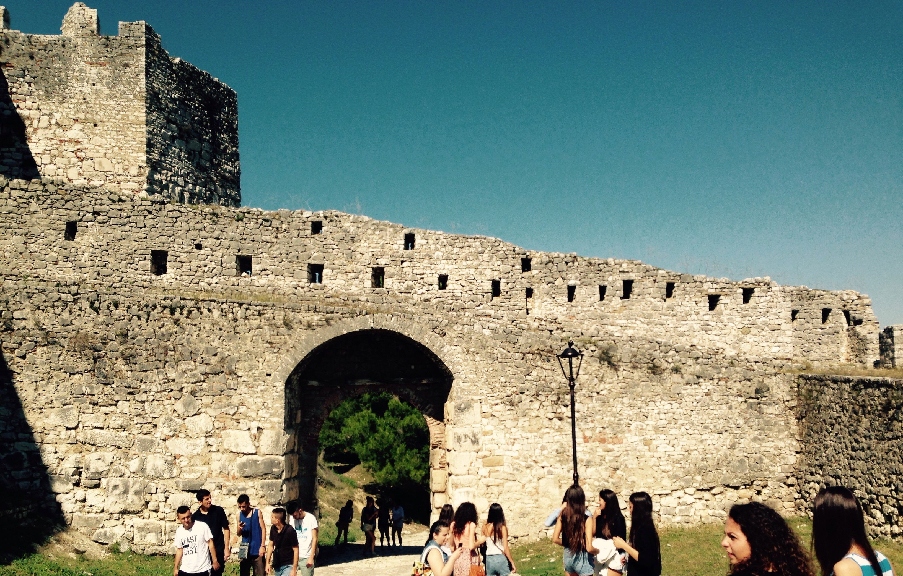
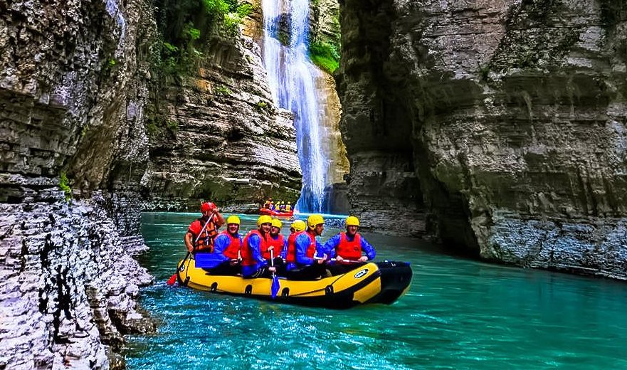
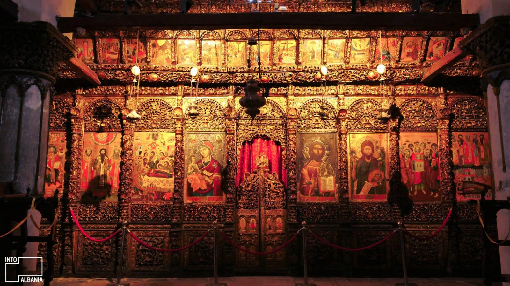

Berati është një ndër qytetet e rrallë, i cili i takon agimit të njerëzimit. Një kohë, kur ujrat rridhnin të pakontrolluara dhe shkatërruese, në këtë zonë u krijua një masiv shkëmbi, i zbuluar nga natyra në sajë të këtij lumi, i cili duket të jetë vënë posaçërisht për të mirëpritur një qytet ku jeta filloi të organizohej për më shumë se 2400 vite. Ky qytet, rezultat i fantazisë së rafinuar, tërhoqi poetët të shkruajnë dhe piktorët të pikturojnë. Qytetet si Berati kanë një gjenezë jo të thjeshtë. Periudha e para-qytetërimit zgjati gati dymijë vjet. Zbulimi në muret e kështjellës, i dy çekanëve prej guri dhe mbetjeve metalike (përbërë prej bakri dhe bronzi), që i përkasin fillimit të periudhës së bronzit (dymijë vjet para Krishtit) e provojnë këtë. Zbulimet e mëvonshme të shumë pjesëve prej qeramike, tregojnë shtimin e ngulimeve të bëra në këtë qendër, derisa në shekullin e IV para Krishtit vendi u transformua në një kështjellë në kodër djathtas lumit Osum, e cila shënoi origjinën e qytetit. Kështjella me bazamente ilire, u ruajt në shekuj dhe në shekujt VI, XIII, XV e XIX u modifikua. Si i tillë ajo nuk është vëtëm një ndër kështjellat më të mëdha të banuara, por edhe një arkiv gurësh, i cili ofron një varietet stilesh e kontributesh të epakave të ndryshme, si asaj Romane, Bizantine, Shqiptare e Otomane. Gjithmonë së njejtës periudhë (shekulli IV para Krishtit) i përket edhe një tjetër kështjellë ajo e Goricës, e pozicionuar në kodrën përballë, duke krijuar një fortifikim të dyfishtë në të dy anët që zbresin drejt lumit. Rezultat i këtij fortifikimi nuk ka qenë vetëm mundësia për të dominuar zonën, por edhe për efekt dekorativ për pamjen: kodrat ngjajnë si mbretër me kurorat mbi koka, të fomuara nga kështjellat e bardha.
|

Kalaja e BeratitKalaja e Beratit, një pikë referimi e fortesës në qytetin e Beratit, Shqipëri, shtrihet lart mbi lumin Osum. Kalaja daton 2500 vjet më parë. Brenda kalasë së Beratit strehohen shumë elemente historike. |

Kanionet e OsumitKanioni i Osumit ndodhet në Shqipërinë e Jugut, afër qytetit të Çorovodës. Lumi, i cili kalon përmes qytetit të Beratit, derdhet përmes kanionit. Ka shumë kalime nëntokësore dhe shpella të pashkelura në të gjithë gjatësinë e kanionit. |

Muzeu Ikonografik OnufriMuzeu Ikonografik Onufri u krijua për të mbrojtur ikonat, veprat artistike dhe artefaktet e shpëtuara nga rrënojat e ndërtesave fetare të Beratit. Nje "must" për tu vizituar nëse jeni të apasionuar me historinë e vendeve në epokën para dhe pas osmane. |